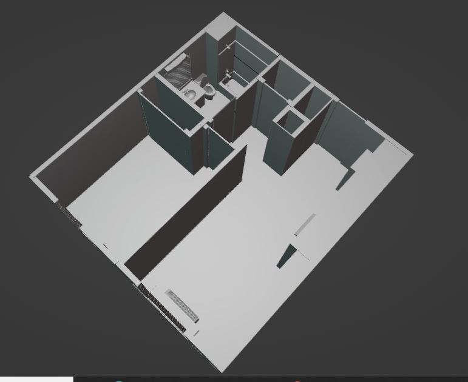

My supervisor mentioned interest in a 3D map of the facility for security purposes. At the time, I had just begun learning Blender 3.6—with no prior experience—but I’ve always been quick to pick up new tools. I offered to create the map, but before I could begin, I was asked to prove I could lead a project of that scale and earn client approval. So in just four days, I built this model of the apartment I was living in at the time.

The model was built to scale using Blender’s grid snapping and unit settings. This allowed for precise layout and realistic proportions.
These shots demonstrate the level of detail and the potential for interactivity in the final product.
After presenting this model, the client approved the full project, allowing me to use Blender professionally for three months and gain valuable real-world experience.
